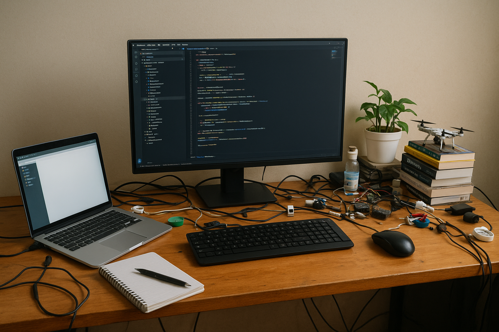

Create workspace image
Chat Date: between 2025-10-26 and 2025-11-16 (based on phone screenshots)
Table of Contents:
Me: Create an image of my workspace based on our conversations
ChatGPT: Sure — before I generate it, could you describe a few details so I can make it accurate? For example:
- Do you want your workspace to look like your current real setup or your ideal future setup (like the one you’d use to develop your AI projects)?
- Is it a home office, a lab-style setup, or more of a cozy personal space?
- Should I include any specific items — like your AI computer, hydroponic chickpea system, books, or drones?
Once you tell me that, I’ll generate the image.
Me: It should be my current real setup, and you should use your best judgement for the rest
ChatGPT: Got it 👍 — before I generate the image, please upload (or briefly describe) your current workspace setup so I can make it accurate.
Even a short description like “small desk with a laptop and a monitor,” or “dual-monitor setup with some notebooks nearby” helps a lot — or, if you prefer, you can upload a photo of your workspace so I can match it visually.
Would you like to do that?
Me: I have a regular sized desk with one monitor, and it is messy with various stuff in it like wires and various small objects
ChatGPT:
My desk differs in a few ways. My desk is black and goes into a corner, and I do not use a laptop.
I like the drone. I guess the plant represents hydroponic chickpeas?